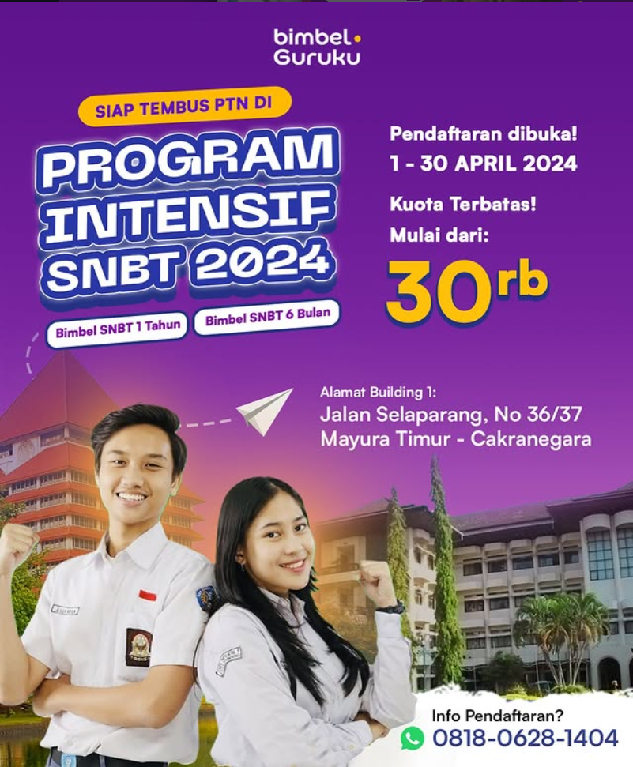
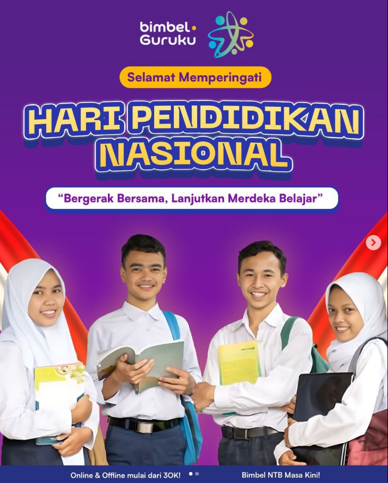

Solusi Belajar
Anak Pintar
Bimbel Guruku hadir di Mataram untuk membantu putra-putri Anda meraih nilai akademis impian dengan metode belajar yang menyenangkan dan komunikatif.
Dipercaya oleh lulusan universitas terbaik:
10th
Pengalaman Edukasi
3
Gedung Belajar
500+
Tutor Profesional
10k+
Siswa Berhasil
Pilih Program Masa Depan
yang Tepat
Untukmu
Kami merancang kurikulum yang spesifik untuk setiap tingkatan pendidikan guna memaksimalkan potensi akademik setiap siswa.
SD / MI Reguler
Focus pada penguatan konsep dasar matematika dan science dasar secara menyenangkan.
- Math Specialist
- Reading Literacy
- Science Experience
UTBK / SNBT Master
Program unggulan dengan sistem simulasi persis aslinya dan analisis data AI.
- AI Prediction Score
- Unlimited Tryouts
- Personalized Mentoring
SMP / SMA Intensive
Pendalaman materi sekolah, persiapan ujian semester, dan bantuan PR 24/7 dengan tutor standby.
- Kurikulum Merdeka
- PR Help Desk 24/7
- Modul Super Lengkap
PAUD / TK (Calistung)
Membantu si kecil mengenal huruf dan angka dengan cara yang menyenangkan & character building.
- Reading & Writing
- Basic Counting
- Fun Learning
Fast Response
Layanan bantuan tugas dan konsultasi akademik yang siap siaga 24 jam untuk siswa.
Tutor Berkompeten
Tutor kami berkompeten dan friendly, memberikan suasana belajar yang betah bagi siswa.
Materi Lengkap
Modul belajar yang disusun sistematis sesuai dengan update kurikulum nasional terbaru.
Analisis AI
Menggunakan AI untuk memetakan kekuatan dan kelemahan siswa dalam belajar.
Kenapa Memilih Bimbel Guruku?
Kami bukan sekadar tempat les biasa. Kami adalah partner strategis Anda untuk menaklukkan setiap tantangan akademis dengan metode yang telah teruji selama lebih dari satu dekade.
Metode Belajar Hybrid
Fleksibilitas belajar offline di cabang atau online dari rumah dengan kualitas yang sama baiknya.
Personalized Learning Path
Setiap siswa memiliki rencana belajar yang berbeda sesuai dengan target universitas/sekolah impian.
Komunitas Belajar Ambis
Bergabunglah dengan ribuan siswa ambisius lainnya untuk saling memotivasi dan bertukar informasi.
Selalu Terkoneksi dengan
Informasi Akademis Terbaru
Kami memastikan setiap orang tua dan siswa mendapatkan akses informasi yang transparan mengenai progres belajar, jadwal ujian, hingga update kuota PTN melalui portal informasi khusus.
Real-time Progress Report
Pantau nilai tryout & kehadiran secara instan lewat aplikasi mobile eksklusif kami.
Admission Counseling
Layanan konsultasi pemilihan jurusan dan universitas berdasarkan minat bakat.
Disukai oleh Ribuan Orang Tua Siswa se-Indonesia
Follow for Updates


Ekspertise dari Tutor Terbaik
Bekerja sama dengan pengajar profesional yang memiliki pengalaman bertahun-tahun dalam membimbing siswa menembus PTN impian.

Mr. WJ (I Wayan Juliana)
Alumni Universitas Indonesia

Budi Santoso, M.Si
Alumni ITB Bandung

Denny Kurniawan
Alumni Universitas Gadjah Mada

Anita Rahma, S.Pd
Alumni Universitas Diponegoro
Apa Kata Mereka Tentang Kami?
Keberhasilan siswa adalah prioritas utama kami. Berikut adalah pengalaman nyata dari mereka yang telah berjuang bersama Bimbel Guruku.
Berdasarkan 46 Review Google
"Bimbel recomended. Cuma 3 bulan anak udah bisa calistung dari yg hanya kenal huruf vocal n tidak bisa pegang pensil. the best"
"Tempat les yg recomended banget di Mataram. Ownernya komunikatif selalu menyediakan waktu utk diskusi dg siswa dan orgtua. Anak sy feel at home belajar di sini."
"Belajar di Guruku 1 jam langsung mengerti. Bimbel Guruku TOP BGT! Tutornya friendly banget sama muridnya. Luar biasa deh 👍👍"
"Tempat les yg gak cuma bantu lebih paham pelajaran sekolah, buat adik2 PAUD dan TK pun mantap krna ada character building juga yg disisipkan setiap kali les 😁👌"
Tanya Jawab Seputar Bimbel
Temukan jawaban untuk pertanyaan yang paling sering ditanyakan oleh orang tua dan calon siswa.
Bagaimana sistem belajarnya?
Kami menyediakan sistem belajar hybrid (bisa datang ke cabang atau via online) dengan fokus pada penguatan konsep dasar sebelum masuk ke latihan soal tingkat tinggi (HOTS).
Apakah ada jaminan lulus PTN?
Meskipun kelulusan bergantung pada usaha individu, kami memberikan jaminan bimbingan intensif dan simulasi berulang sampai siswa benar-benar siap menghadapi ujian asli dengan skor yang optimal.
Bagaimana cara mendaftarnya?
Anda bisa mendaftar langsung lewat tombol "Daftar Sekarang" di website ini untuk terhubung dengan tim admin kami via WhatsApp atau langsung mengunjungi cabang terdekat.
Apakah ada fasilitas cicilan biaya pendidikan?
Ya, kami menyediakan skema pembayaran bertahap untuk memudahkan para orang tua tanpa bunga sepersen pun. Silakan konsultasikan dengan admin cabang kami.
Siap Menjadi Bagian
dari
Generasi
Emas Selanjutnya?
Kuota terbatas untuk setiap angkatan. Amankan kursi belajarmu sekarang juga dan raih impianmu!